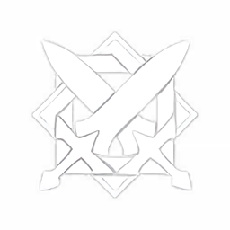
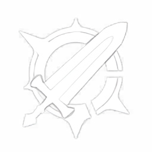
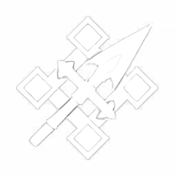
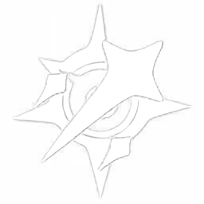
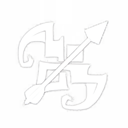

Swords are lightweight, agile weapons ideal for quick attacks and combos. They offer high attack speed and are great for mobility-focused characters.
Swords are the most common weapon type in Genshin Impact, used by many popular characters like Jean and Kaeya.


Claymores are heavy two-handed swords that deal massive damage in wide swings. They excel in crowd control and burst damage.
Claymores require strength to wield, making them perfect for tanky characters like Diluc and Beidou.
Polearms are long-range spears that provide excellent reach and charged attacks. They balance offense and defense with plunging attacks.
Polearms are inspired by traditional Chinese spears and are used by characters like Xiao and Hu Tao.


Catalysts are magical books or orbs that focus on elemental damage and support. They have long range and are perfect for mages.
Catalysts are the least physical weapon type, relying on magic, and are used by characters like Nahida and Mona.
Bows are ranged weapons that excel in charged shots and area damage. They offer mobility and are great for kiting enemies.
Bows allow for precise aiming and are used by archers like Ganyu and Yoimiya for high-damage shots.
